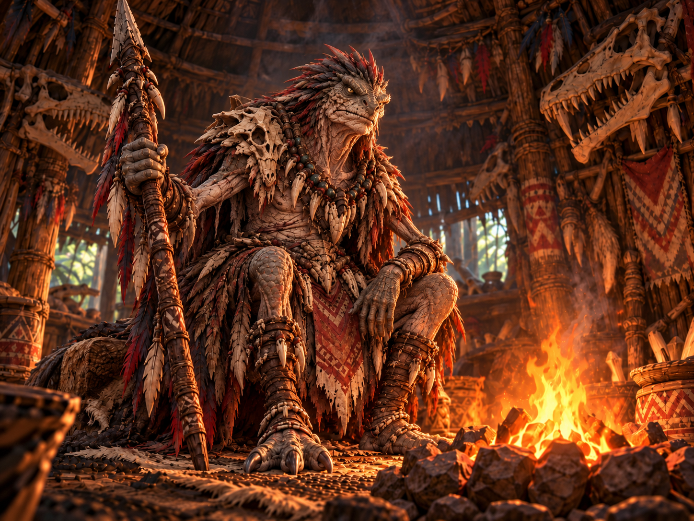

VILLAGGIO SCAGLIAGRIGIA
CAPANNA DELL'ANZIANO

PARLA CON L'ANZIANO
ANZIANOIl vecchio lucertoloide ti fissa in silenzio. «Perfino i miei cacciatori si nascondono al suo passaggio. Il Mietitore Smeraldo non conosce pietà.»
Il dialogo IA dell'Anziano è ancora in preparazione.
Un fuoco rituale rischiara pelli, trofei e simboli della tribù. L'Anziano ascolta soltanto chi ha dimostrato rispetto per Scagliagrigia.